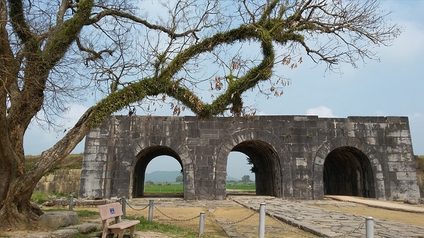

Thành nhà Hồ là di tích lịch sử được xây dưới triều Trần. Đây là một trong những tòa thành lũy bằng đá hiếm hoi còn sót lại trên thế giới và cũng là điểm du lịch rất được yêu thích tại Thanh Hoá.
1. Thành nhà Hồ ở đâu?
Thành nhà Hồ ở tỉnh nào? Thành nhà Hồ thuộc xã Vĩnh Long, huyện Vĩnh Lộc, tỉnh Thanh Hoá, nằm cách trung tâm thành phố 45km, cách Hà Nội 140km. Thành nhà Hồ Vĩnh Lộc từng là kinh đô của nước Việt Nam và hiện tại trở thành cảnh đẹp Thanh Hoá, được nhiều du khách ghé thăm.
Nhắc đến vùng đất Thanh Hóa, người ta nhớ ngay đến cái nôi của những vị anh hùng dân tộc, những câu chuyện lịch sử hùng tráng với những chiến tích vẻ vang. Trước biến cố thăng trầm của lịch sử, trải qua nhiều cuộc chiến tranh, đến ngày nay nhiều di tích vẫn còn sừng sững với thời gian. Nổi bật trong số đó là thành nhà Hồ với những nét đẹp cổ kính, rêu phong, là chứng tích cho một giai đoạn lịch sử quan trọng của dân tộc Việt Nam.
2. Thành nhà Hồ được UNESCO công nhận vào năm nào?
Di tích thành nhà Hồ đã được Bộ Văn hoá - Thể thao và Du lịch xếp hạng là di tích cấp quốc gia, có giá trị đặc biệt quan trọng của dân tộc vào năm 1962.

Tiếp theo đó là 11 năm đệ trình hồ sơ lên Uỷ ban Di sản Thế giới. Đến ngày 27 tháng 6 năm 2011, tổ chức UNESCO đã chính thức công nhận thành nhà Hồ di sản văn hoá thế giới sau khi thông qua hai tiêu chí:
• Thể hiện được sự ảnh hưởng và các giá trị nhân văn qua một thời kỳ lịch sử của quốc gia hay khu vực trên thế giới. Có những đóng góp quý báu về kiến trúc, công nghệ, điêu khắc, và quy hoạch thành phố. • Thành nhà Hồ Vĩnh Lộc Thanh Hoá là công trình cổ xưa, khắc hoạ được giá trị của một hay nhiều giai đoạn trong lịch sử nhân loại.

Giữ là đường ray, 2 bên dành cho xe thô sơ và người đi bộ. Năm 2000, cây cầu Hoàng Long được xây dựng nằm ngay cạnh Hàm Rồng, con đường chia đôi gánh nặng, giao thông qua sông Mã nhộn nhịp hơn bao giờ. Hiện nay, cây cầu cũ chỉ phục vụ cho tuyến đường sắt lưu thông là chính Cầu Hoàng Long nằm ngay cạnh cầu Hàm Rồng. Từ khi có cầu mới, cầu Hàm Rồng vắn người qua lại hơn, nhưng đây vẫn là nơi hẹn hò lý tưởng của nhiều cặp đôi, nơi tụ tập tán chuyện của những nhóm bạn học sinh áo trắng. Ngày nay, cầu Hàm Rồng đã trở thành một địa điểm tham quan nổi tiếng tại Thanh Hóa. Đứng trên cầu, du khách có thể phóng tầm mắt ra xa để ngắm dòng sông Mã êm đềm, nhìn núi Ngọc sừng sững và chiêm ngưỡng khung cảnh tuyệt đẹp của xứ Thanh. Tất cả tạo nên một bức tranh phong cảnh tuyệt đẹp, có sông, có núi, có cây cầu nghiêng nghiêng dưới ánh hoàng hôn.